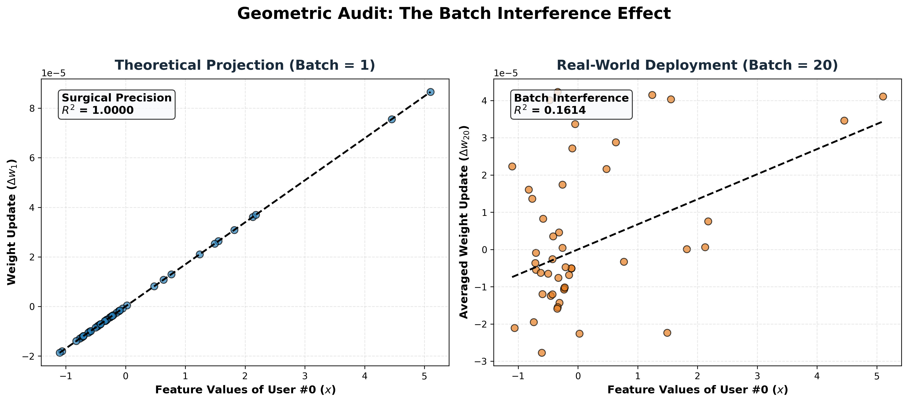
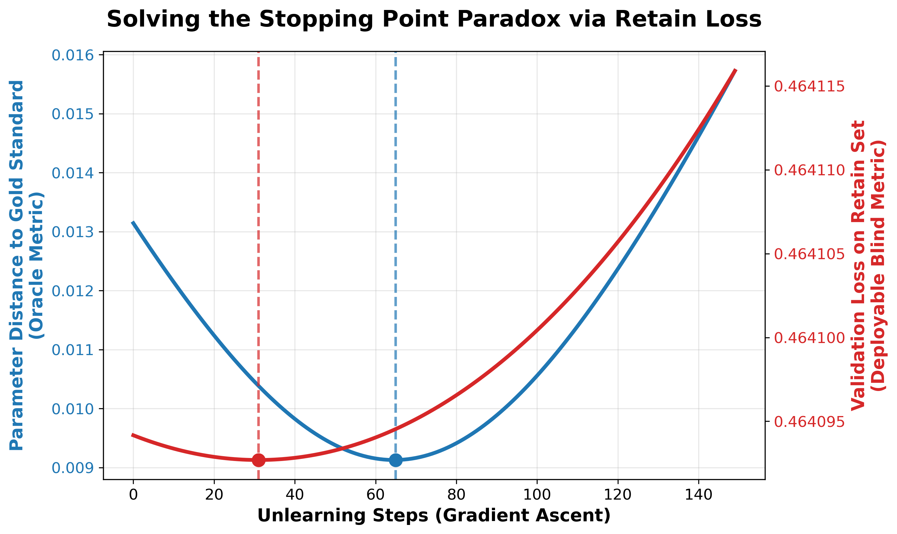
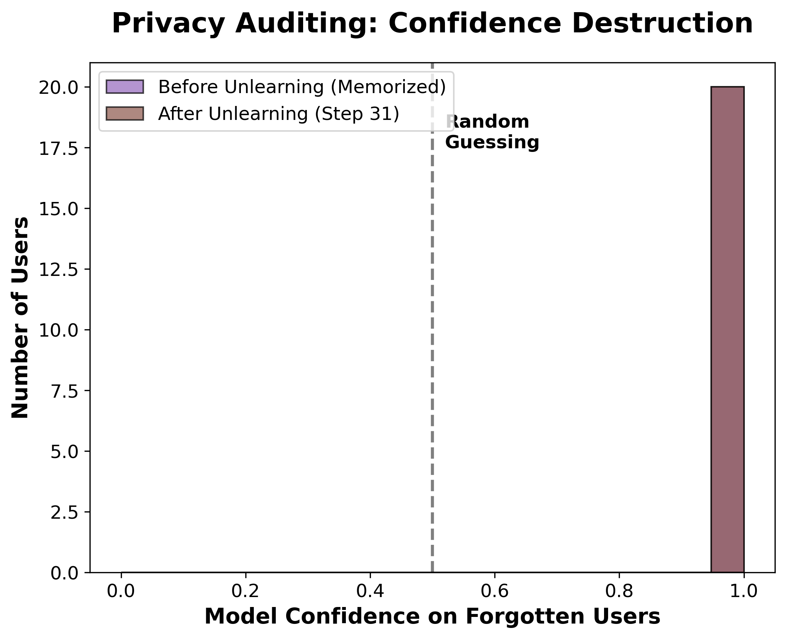

Advanced privacy verification in FinTech models.
We verified the algorithm's integrity by transitioning from a theoretical baseline to production deployment:
The comparative scatterplots mathematically prove the limits of batch unlearning.

Isolating the optimization dynamics of convex machine unlearning.
The model calculates the probability of credit risk using the sigmoid function.
\[ \hat{y} = \frac{1}{1 + \exp( - (w^T x + b) )} \]To unlearn one person, we maximize the error between the prediction and true label.
\[ \nabla w = x \cdot ( \hat{y} - y ) \]Scaling requires averaging competing gradients, diluting precision for any individual.
\[ \nabla w_{batch} = \frac{1}{N} \sum_{i=1}^{N} x_i \cdot ( \hat{y}_i - y_i ) + \lambda w \]Our methodology isolated convex optimization dynamics to provide mathematically verifiable guarantees.

We identified a 34 step Safety Window where the model maintains peak utility.
Our "Blind Metric" autonomously halts unlearning at Step 31, preventing model degradation.
This dual axis line graph illustrates how we established an autonomous stopping rule.
MIA audits revealed target confidence only dropped from 99.09% to 98.93% at Step 31.
This "Memorization Trap" proves that standard gradient ascent is insufficient for outlier erasure in high confidence models.
We verified true amnesia using Membership Inference Attacks.
